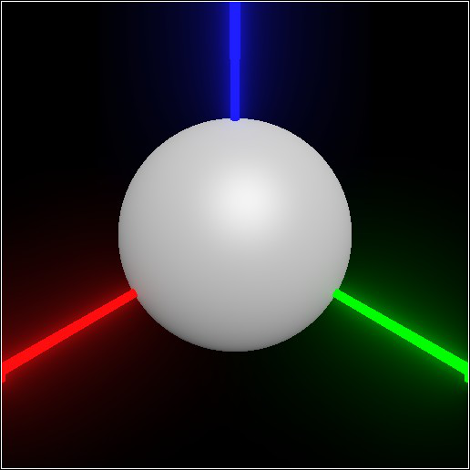
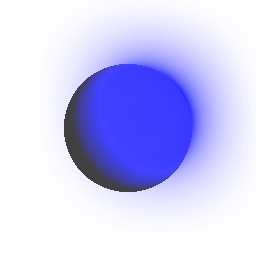
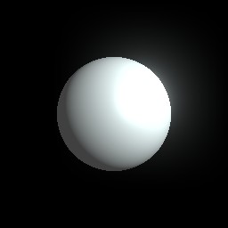
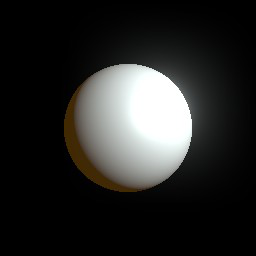
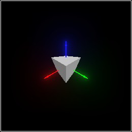
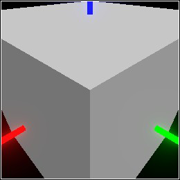
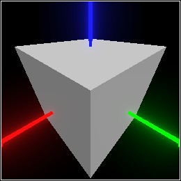

9 Rendering
9.1 Rendering Optimization
The optimization takes more time than rendering the original pict, so use freeze to optimize unchanging, frequently drawn sub-scenes. For static scenes with tens of thousands of shapes, order-of-magnitude speedups are typical.
The results of transformations, and of combiners such as combine and pin, which do not alter shapes or their attributes, retain the optimized streaming data. The results of attribute-altering functions such as set-color do not.
9.2 Rendering Parameters
> (parameterize ([current-pict3d-width 512] [current-pict3d-height 512]) (sphere origin 1/2))
This is correct behavior. A Pict3D represents the contents of 3D space, which has nothing to do with how those contents are viewed.
> (current-pict3d-width 512) > (current-pict3d-height 512) > (sphere origin 1/2) 
See the set-pict3d method of pict3d-canvas%, and pict3d->bitmap, for how these parameters are used when rendering on a canvas or to a bitmap.
procedure
(current-pict3d-add-sunlight? add-sunlight?) → Void add-sunlight? : Boolean
= #t
procedure
(current-pict3d-add-indicators? add-indicators?) → Void add-indicators? : Boolean
= #t
procedure
(current-pict3d-add-grid? add-grid?) → Void add-grid? : Boolean
= #f
procedure
(current-pict3d-add-wireframe) → (U #f 'color 'emitted)
(current-pict3d-add-wireframe add-wireframe) → Void add-wireframe : (U #f 'color 'emitted)
= #f
procedure
(current-pict3d-auto-camera fun) → Void fun : (-> Pict3D Affine)
= default-pict3d-auto-camera
procedure
(current-pict3d-width width) → Void width : Integer
= default-pict3d-width
procedure
(current-pict3d-height height) → Void height : Integer
= default-pict3d-height
procedure
(current-pict3d-background background) → Void background : RGBA
= default-pict3d-background
While pict3d-canvas% respects this parameter, be aware that it draws Pict3D instances over a black background. The alpha component of background thus only appears to darken the background color.
> (parameterize ([current-pict3d-background (rgba "white" 0)]) (pict3d->bitmap (combine (sphere origin 1/2) (light (pos 0 1 1) (emitted "blue" 5))))) 
procedure
(current-pict3d-ambient ambient) → Void ambient : Emitted
= default-pict3d-ambient
> (define p (combine (sphere origin 1/2) (light (pos 0 1 1) (emitted "azure" 2)))) > (pict3d->bitmap p) 
> (parameterize ([current-pict3d-ambient (emitted "orange" 1)]) (pict3d->bitmap p)) 
procedure
(current-pict3d-fov degrees) → Void degrees : Positive-Real
= default-pict3d-fov
> (current-pict3d-fov 150) > (cube origin 1/2) 
> (current-pict3d-fov 60) > (cube origin 1/2) 
> (current-pict3d-fov 90) > (cube origin 1/2) 
procedure
(current-pict3d-z-near z-near) → Void z-near : Positive-Real
= default-pict3d-z-near
procedure
(current-pict3d-z-far z-far) → Void z-far : Positive-Real
= default-pict3d-z-far
The only feasible reason to change these is to set the far plane as a speed optimization. (Pict3D’s rendering engine won’t process anything for drawing that it can prove is outside the view frustum.)
procedure
(current-pict3d-legacy? legacy?) → Void legacy? : Boolean
= #f
In general, you should only try setting (current-pict3d-legacy? #t) if you’re getting strange OpenGL errors.
On Mac OS, this parameter must be #f. If #t, only OpenGL 2.1 is available. If #f, OpenGL 3.2 or higher is available. Pict3D requires at least OpenGL 3.0.
On Linux, this parameter may be (or may have to be) either #t or #f, depending on the graphics driver.
On Windows, this parameter is currently ignored.
procedure
(current-pict3d-check-version? check-version?) → Void check-version? : Boolean
= #t
When current-pict3d-check-version? is #t, Pict3D raises an error when the OpenGL version is less than 3.0. Otherwise, it doesn’t check, and counts on hardware and drivers implementing equivalent extensions.
Use this at your own risk. Pict3D will work on standards-compliant implementations of OpenGL 3.0 or higher, but there is no such guarantee for lower versions, even when they implement all the required extensions. Further, if Pict3D works on a lower version, don’t expect it to keep doing so. In the future, Pict3D might use a 3.0 feature that your hardware or driver doesn’t implement an extension for. If Pict3D doesn’t work when current-pict3d-check-version? is #f, it may raise errors, render garbage, or cause segfaults.
Currently, Mesa 3D’s software rendering implements all the required extensions. On Linux, if your graphics driver uses Mesa’s infrastructure, you can use its software renderer by starting DrRacket with
LIBGL_ALWAYS_SOFTWARE=TRUE <racket-binary-path>/drracket
and putting (current-pict3d-check-version? #f) at the top of your programs.
value
default-pict3d-width : Positive-Index = 256
value
default-pict3d-height : Positive-Index = 256
value
value
default-pict3d-background : RGBA = (rgba "black")
value
default-pict3d-ambient : Emitted = (emitted "white")
value
default-pict3d-fov : Positive-Flonum = 90.0
value
default-pict3d-z-near : Positive-Flonum = (expt 2.0 -20.0)
value
default-pict3d-z-far : Positive-Flonum = (expt 2.0 32.0)
9.3 Rendering Targets
procedure
(pict3d->bitmap pict [width height]) → (Instance Bitmap%)
pict : Pict3D width : Integer = (current-pict3d-width) height : Integer = (current-pict3d-height)
Extra directional lights and indicators added to interactive displays are not drawn. See Quick Start.
type
Instances of pict3d-canvas% have type (Instance Pict3D-Canvas%).
|
superclass: canvas% |
constructor
(new pict3d-canvas% [parent parent] [ [style style] [label label] [gl-config gl-config] [enabled enabled] [vert-margin vert-margin] [horiz-margin horiz-margin] [min-width min-width] [min-height min-height] [stretchable-width stretchable-width] [stretchable-height stretchable-height] [pict3d pict3d]]) → (is-a?/c pict3d-canvas%)
parent :
(U (Instance Frame%) (Instance Dialog%) (Instance Panel%) (Instance Pane%))
style :
(Listof (U 'border 'control-border 'combo 'vscroll 'hscroll 'resize-corner 'gl 'no-autoclear 'transparent 'no-focus 'deleted)) = null label : (U #f String) = #f gl-config : (Instance GL-Config%) = (pict3d-default-gl-config) enabled : Any = #t vert-margin : Natural = 0 horiz-margin : Natural = 0 min-width : (U #f Natural) = #f min-height : (U #f Natural) = #f stretchable-width : Any = #t stretchable-height : Any = #t pict3d : Pict3D = empty-pict3d All initialization fields are the same as for canvas% except for the additional pict3d field. Use this field to set the first Pict3D that will be rendered.The symbols 'gl and 'no-autoclear are prepended to style before invoking the canvas% constructor.
The value of the parameter current-pict3d-legacy? is used to determine what kind of OpenGL context to create for the canvas. The kind of OpenGL context cannot be changed after the canvas is created.
The values of the view parameters current-pict3d-auto-camera, current-pict3d-background, current-pict3d-ambient, current-pict3d-z-near, current-pict3d-z-far and current-pict3d-fov are used to render pict3d.
Extra directional lights and indicators added to interactive displays are not drawn. See Quick Start.
method
(send a-pict3d-canvas set-pict3d pict) → Void
pict : Pict3D Sets the Pict3D to be rendered. The values of the view parameters current-pict3d-auto-camera, current-pict3d-background, current-pict3d-ambient, current-pict3d-z-near, current-pict3d-z-far and current-pict3d-fov are used to render pict.Extra directional lights and indicators added to interactive displays are not drawn. See Quick Start.
If updates are synchronous (which is the default behavior), set-pict3d returns only after rendering pict. Otherwise, it returns immediately. See set-async-updates?.
method
(send a-pict3d-canvas get-pict3d) → Pict3D
Returns the last Pict3D rendered.
method
(send a-pict3d-canvas set-async-updates? async?) → Void
async? : Boolean Set the update mode. The default value is #f. See set-pict3d.
value
pict3d-default-gl-config : (-> (Instance GL-Config%))